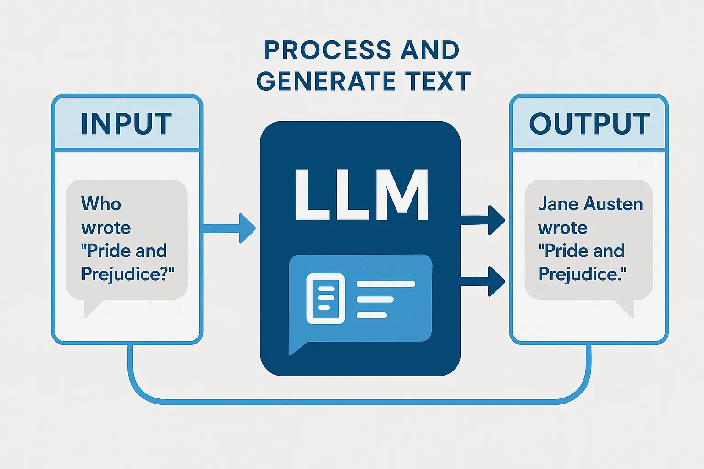
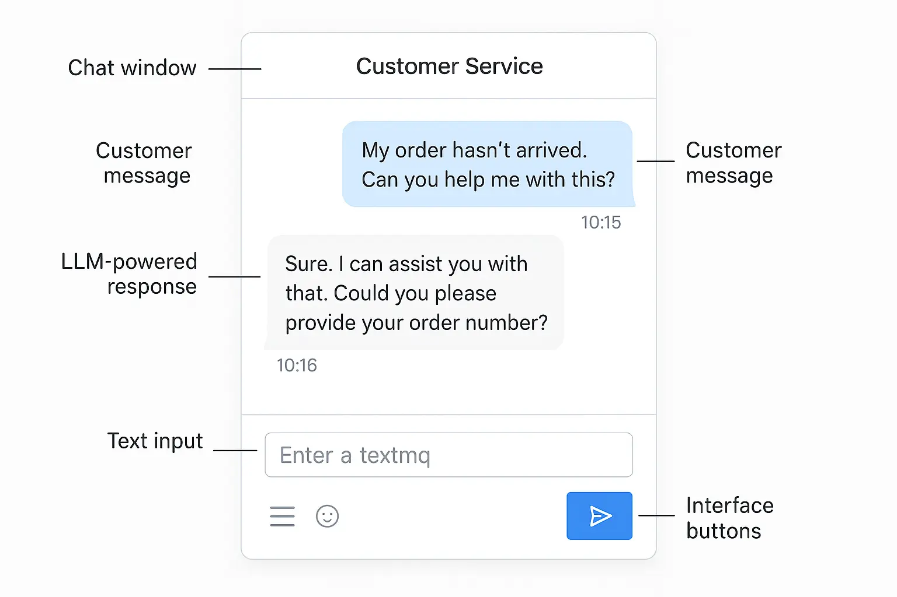
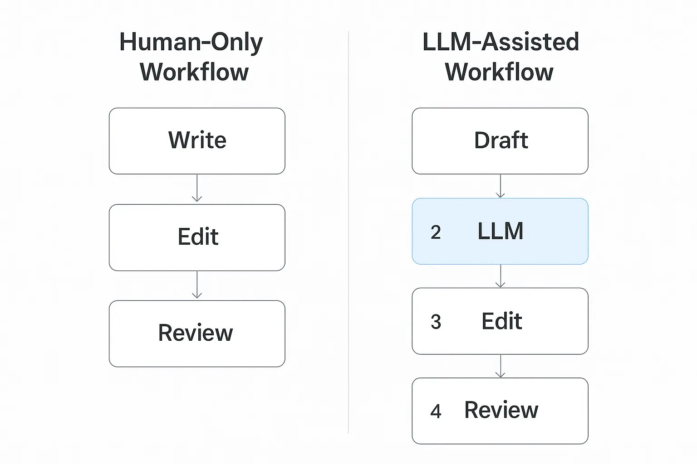
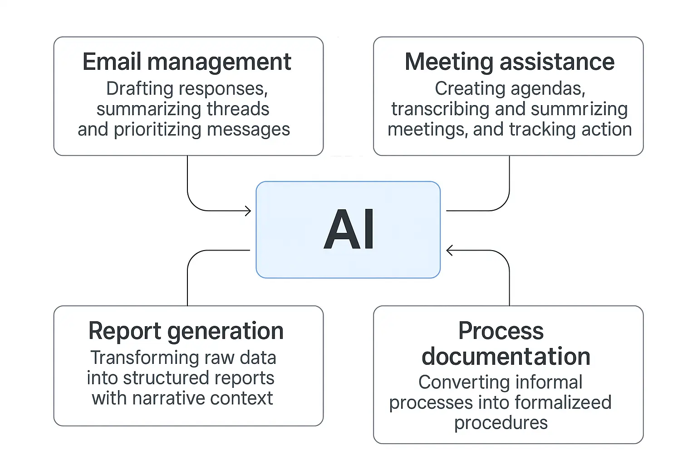
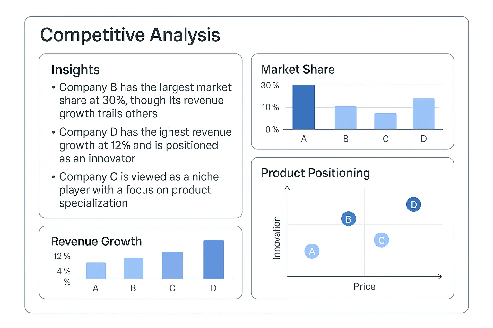
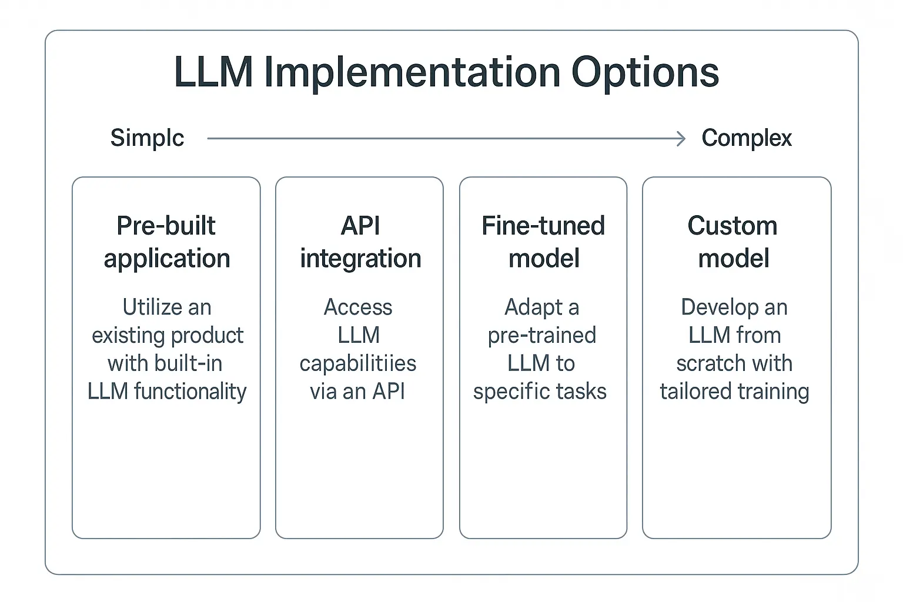
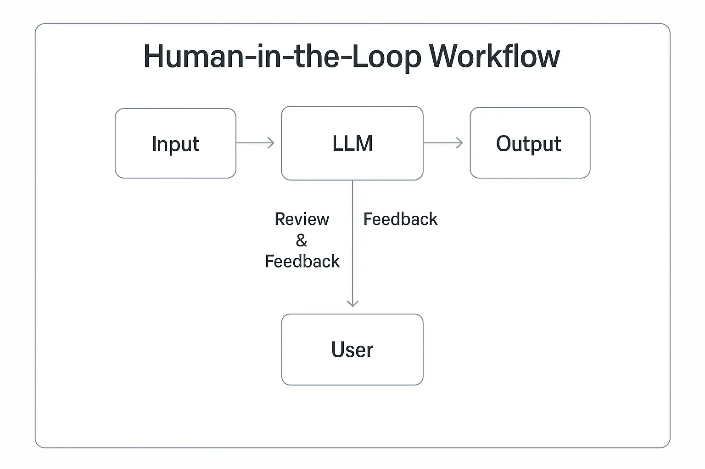

Introduction
When I mention "AI" or "large language models" to my non-tech friends who run small businesses, I often get the same glazed-over look. There's this pervasive myth that advanced AI technologies like LLMs (large language models) are only relevant for tech giants and AI-focused startups. But that couldn't be further from the truth. These powerful tools have matured to the point where virtually any business—from your local law firm to the family-owned manufacturing company—can leverage them for tangible benefits without needing a team of data scientists.
Last month, I visited an accounting firm that cut their report preparation time by 60% using off-the-shelf LLM tools. They aren't an "AI business"—they're accountants who found a practical way to use new technology. And they're not alone. The democratization of these tools means the barrier to entry has never been lower for traditional businesses looking to gain a competitive edge.
What Are LLMs (And Why Should You Care?)
Before diving into applications, let's demystify what we're talking about. Large language models are AI systems trained on vast amounts of text data that can understand, generate, and manipulate human language with remarkable sophistication. The most well-known examples include OpenAI's GPT models, Anthropic's Claude, and Google's Gemini.
Think of them as extremely knowledgeable assistants who can read, write, and reason about text—but with superhuman speed and consistency. They're not replacing humans; they're amplifying what humans can accomplish.

LLMs can understand context and nuance in ways previous AI technology couldn't
Why should your non-AI business care? Because these tools excel at automating cognitive tasks that previously required human attention—freeing your team to focus on higher-value activities that actually require human judgment and creativity.
Revolutionizing Customer Service
Intelligent Support Systems
Customer service is perhaps the most immediate application for many businesses. Modern LLM-powered chatbots are leagues beyond the frustrating, script-based bots of yesterday. They can:
- Handle complex queries with nuanced understanding of customer needs
- Process multiple languages with near-native fluency
- Maintain context throughout lengthy customer conversations
- Seamlessly escalate to human agents when necessary
A jewelry retailer I consulted with recently implemented an LLM-powered chat system that now handles 78% of customer inquiries without human intervention—and their customer satisfaction scores actually went up. The key is that the system knows when to hand off to a human, creating a hybrid approach that combines efficiency with the personal touch when it matters most.

Modern LLM chatbots maintain context throughout the conversation and offer personalized responses
Personalized Customer Communication
Beyond reactive support, businesses are using LLMs to create personalized outreach that feels genuinely human:
- Tailored email campaigns that adapt messaging based on customer history
- Product recommendations that factor in subtle preferences
- Follow-up communications that reference previous interactions
Pro Tip
When implementing LLM-powered customer service, start with a specific segment of common queries rather than trying to automate everything at once. This focused approach allows you to refine the system based on real interactions before expanding its responsibilities.
Content Creation and Management
Accelerating Content Production
Creating high-quality content consistently is a struggle for most businesses. LLMs can dramatically accelerate this process without sacrificing quality:
- First drafts: Generate initial content drafts in seconds that human writers can refine
- Format adaptation: Transform existing content into different formats (blog to social post, report to presentation)
- SEO optimization: Suggest improvements to help content rank better
- Localization: Adapt content for different regional markets with cultural nuance

LLM-assisted content creation can reduce production time by 40-70%
A mid-sized real estate agency I work with now produces neighborhood guides for 15 different communities each month—a task that previously took their marketing team weeks of work. Their approach isn't to replace their writers but to transform them into editors and strategists who guide and refine AI-generated content.
Managing Knowledge Bases and Documentation
Every business struggles with maintaining up-to-date documentation. LLMs excel at:
- Generating technical documentation from product specifications
- Creating standardized operating procedures from process descriptions
- Updating existing documentation to reflect new information
- Making complex information more accessible through simplified explanations
Last quarter, I watched a manufacturing company use LLMs to rebuild their entire internal knowledge base in just three weeks—a project they had previously estimated would take six months of dedicated work from their already-stretched technical writing team.
Boosting Internal Productivity
Administrative Task Automation
The average knowledge worker spends over 30% of their time on administrative tasks that could be partially or fully automated with LLMs:
- Email management: Drafting responses, summarizing threads, and prioritizing messages
- Meeting assistance: Creating agendas, transcribing and summarizing meetings, and tracking action items
- Report generation: Transforming raw data into structured reports with narrative context
- Process documentation: Converting informal processes into formalized procedures

LLMs can automate many repetitive tasks in the typical office workflow
Data Analysis and Insights
You don't need a data science team to get valuable insights from your business data anymore. LLMs can help:
- Extract patterns and trends from unstructured data
- Generate natural language explanations of complex data
- Create visualizations and dashboards based on verbal requests
- Answer ad-hoc questions about business metrics
I recently worked with a retail chain that used an LLM-powered analytics tool to uncover a surprising correlation between weather patterns and certain product categories—something their traditional reporting had missed for years. This insight alone led to inventory adjustments that improved margins by 4%.
// Simple example of using an LLM API for report generation
async function generateQuarterlyInsights(salesData) {
const response = await llmAPI.complete({
prompt: `Analyze the following quarterly sales data and provide 3-5 key insights:
${JSON.stringify(salesData)}`,
maxTokens: 500
});
return response.text;
}
Market Research and Analysis
Competitive Intelligence
Staying on top of competitor activities and market trends is critical but time-consuming. LLMs can accelerate this process by:
- Analyzing competitor content and marketing materials for themes and positioning
- Summarizing industry reports and extracting relevant insights
- Monitoring social media and reviews for sentiment trends
- Identifying emerging terminology and concepts in your industry

LLM-powered competitive analysis can surface insights that might otherwise be missed
Customer Feedback Analysis
Understanding what customers are saying at scale has traditionally required expensive sentiment analysis tools. Now, LLMs can:
- Categorize and summarize customer feedback from multiple channels
- Identify emerging issues before they become trends
- Analyze sentiment with nuance that accounts for industry-specific context
- Extract actionable suggestions from open-ended feedback
A restaurant chain I advised was able to identify that customers were consistently mentioning lighting levels during dinner service—a subtle issue that traditional keyword analysis had missed because reviewers used varied language to describe the problem.
Implementation Strategies That Won't Break the Bank
Start With Off-the-Shelf Solutions
You don't need custom AI development to get started. Many excellent options require minimal technical setup:
- SaaS platforms: Services like Jasper, Copy.ai, or ChatGPT for Business provide user-friendly interfaces
- API integration: For businesses with some technical capacity, direct API access to models like GPT-4 or Claude offers more customization
- Industry-specific tools: Increasingly, LLM capabilities are being built into existing business software

Different implementation approaches based on technical capacity and customization needs
The Iterative Approach
Rather than large-scale transformation, successful businesses typically follow this pattern:
- Identify a specific pain point where LLMs could help
- Start with a small pilot using existing tools
- Measure results against clear KPIs
- Refine based on feedback and results
- Gradually expand to additional use cases
Pro Tip
When calculating ROI for LLM implementations, don't just look at direct cost savings. Consider the value of freed human capacity that can be redirected to high-value work that machines can't do. This "opportunity ROI" often exceeds direct savings.
Challenges and Limitations
The Reality Check
Despite their power, LLMs aren't magic. Being aware of limitations is crucial:
- Factual reliability: LLMs can occasionally present incorrect information confidently
- Data privacy concerns: Sending sensitive business data to external AI services requires careful consideration
- Need for human oversight: Most applications still require human review and judgment
- Domain-specific knowledge gaps: Models may lack understanding of highly specialized industry terminology

Effective LLM implementation typically involves human oversight at key decision points
Managing Change and Expectations
The biggest implementation challenges are often organizational rather than technical:
- Employee concerns about job displacement
- Unrealistic expectations about capabilities
- Resistance to changing established workflows
- Difficulty measuring ROI for knowledge work improvements
In my experience, transparent communication about how LLMs will augment rather than replace human workers is essential for successful adoption. The businesses that struggle most are those that fail to bring their teams along on the journey.
Real-World Success Stories
Regional Law Firm Transforms Research Process
Johnson & Mercer, a mid-sized law firm specializing in commercial real estate, implemented LLM tools to assist with legal research and document review. Within three months, they reported:
- 42% reduction in time spent on initial document analysis
- Associates able to handle 30% more cases with the same headcount
- Improved work satisfaction as junior lawyers spent less time on tedious review tasks
Crucially, they approached implementation as augmentation rather than replacement. Partners were trained to effectively prompt and verify the system's outputs, maintaining quality while dramatically increasing speed.
Legal professionals using LLMs report being able to focus more on strategic work
Local Hardware Chain Revolutionizes Customer Support
Midwest Hardware, a regional chain with 27 locations, implemented an LLM-powered system to field customer questions about products, availability, and DIY advice. The results were impressive:
- 24/7 customer support capacity without staffing increases
- 89% positive feedback rating on AI-handled interactions
- Store associates reporting more time for high-value customer interactions
- Unexpected benefit: Identified top customer pain points through analysis of common questions
What made this implementation successful was careful training on their specific inventory and procedures. They didn't just deploy a generic system—they created one that understood the nuances of their business.
Conclusion: Taking the First Step
The businesses gaining competitive advantage from LLMs aren't necessarily those with the biggest technology budgets or dedicated AI teams. They're the ones willing to experiment, learn, and thoughtfully integrate these powerful tools into their existing operations.
LLMs aren't replacing traditional businesses—they're empowering them. The question isn't whether your non-AI business should be looking at these technologies, but which specific pain points you could address first for maximum impact.
The future belongs to businesses that effectively combine human and artificial intelligence
Start small, measure carefully, and focus on augmenting your team's capabilities rather than replacing them. The businesses that thrive in the coming years won't be those that avoided AI adoption, but those that found practical, human-centered ways to harness its power.
Have you already implemented LLMs in your non-tech business? I'd love to hear about your experiences in the comments below. And if you're considering taking the plunge, let me know what specific challenges you're hoping to address—I might be able to point you in the right direction.


Comments (0)
Discussion
Leave a Comment